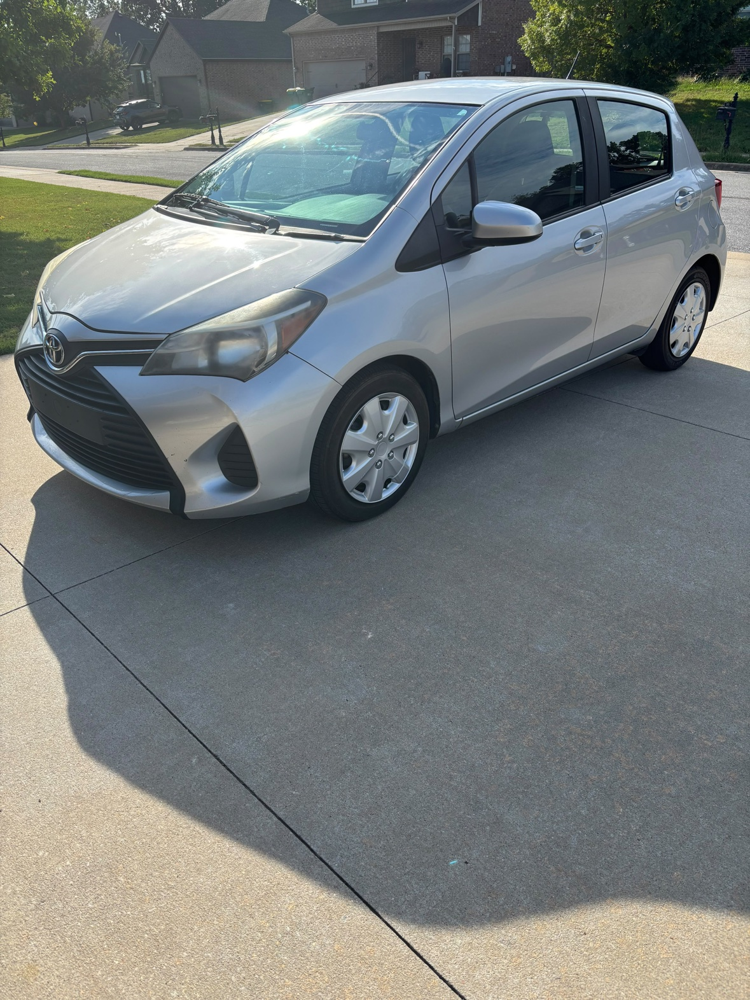
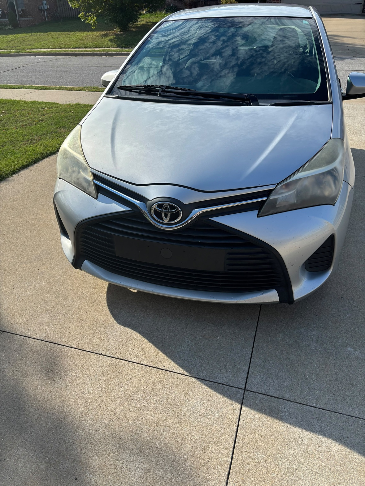
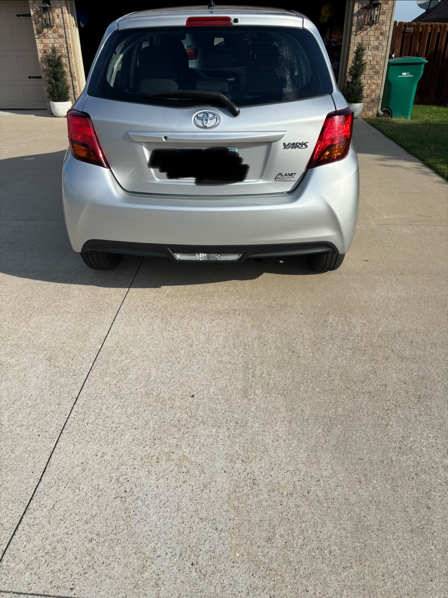
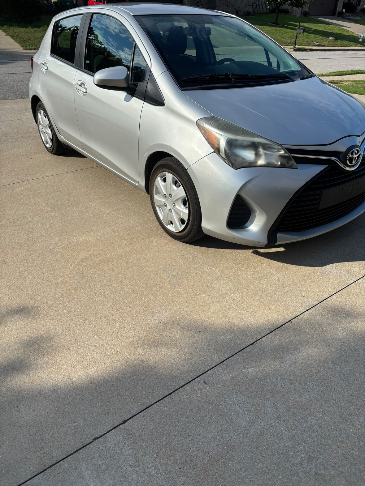
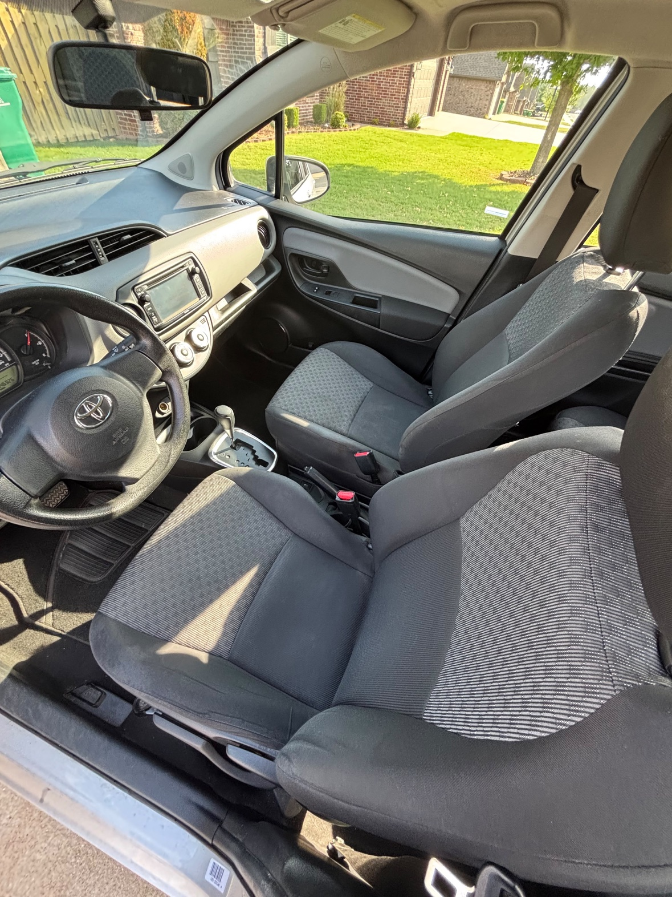
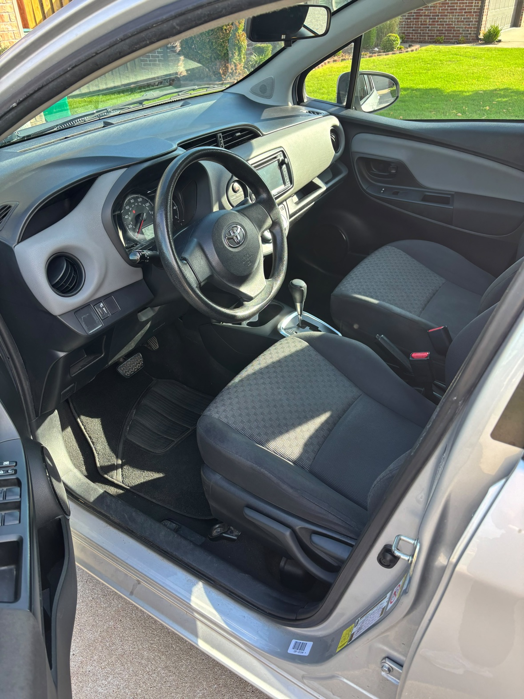
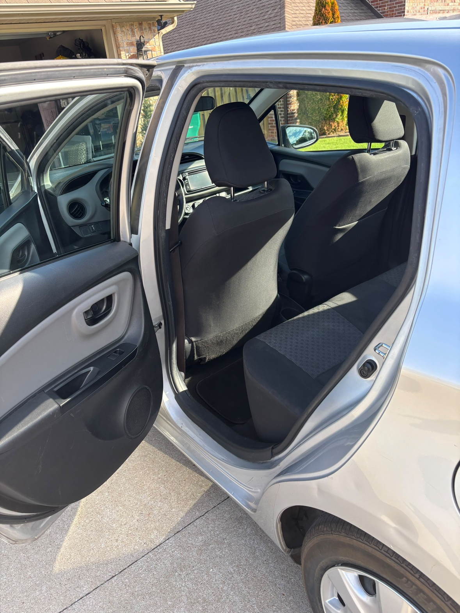
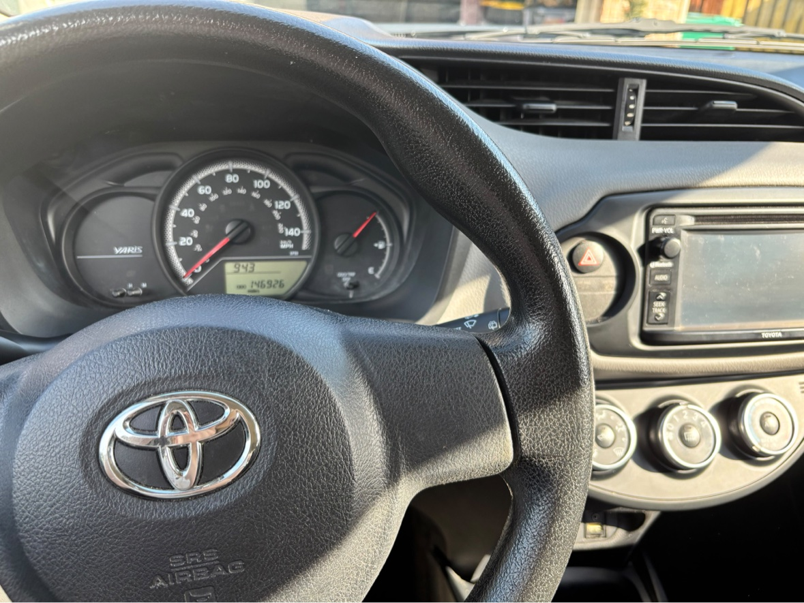
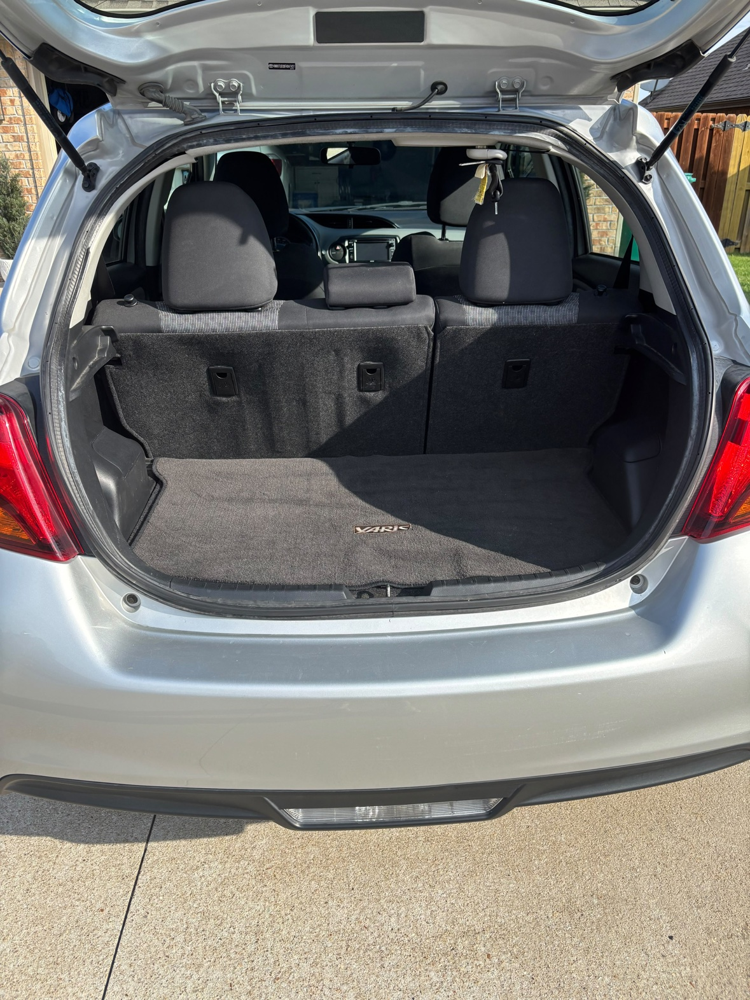

Tap any photo to enlarge.
| Date | Miles | Work performed |
|---|---|---|
| Apr 2026 | 144,058 | Oil & filter, wheel alignment, multi-point inspection |
| May 2025 | 138,630 | Oil & filter, tire rotation, multi-point inspection |
| Aug 2024 | 134,525 | Oil & filter, air & cabin filters, tire rotation, battery service |
| Jan 2023 | 125,534 | Transmission fluid exchange, cooling system service, headlight restoration |
| May 2021 | 112,127 | Tune-up, license plate bulb |
| Jul 2020 | 104,475 | Front door wire harnesses replaced (both sides) |
| Aug 2019 | 100,204 | 4 tires mounted & balanced, 4-wheel alignment |
| 2017 – 2018 | 39k – 92k | Regular oil changes, tire rotations, filters, alignments |
Full dealer service report available on request.
dhodges72@gmail.com • Bentonville, AR 72719 • Sold as-is; welcome to have it inspected by your mechanic before purchase.